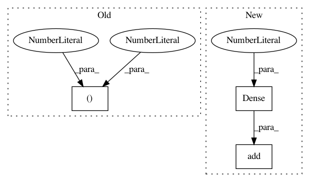

736ba6c6873290fdae110395040f76ba7ab0ff19,tests/test_net_transformer.py,,test_net_transformer,#,3
Before Change
def test_net_transformer():
model_a = Sequential()
model_a.add(Conv2D(32, (3, 3), activation="relu", input_shape=(28, 28, 1)))
model_a.add(Conv2D(32, (3, 3), activation="relu"))
model_a.add(MaxPooling2D(pool_size=(2, 2)))
model_a.add(Dropout(0.25))
After Change
model.add(Flatten())
model.add(Dense(128, activation="relu"))
model.add(Dropout(0.5))
model.add(Dense(10, activation="softmax"))
//ßprint(model.summary())
model.compile(loss=categorical_crossentropy,
optimizer=Adadelta(),
metrics=["accuracy"])
In pattern: SUPERPATTERN
Frequency: 3
Non-data size: 3
Instances
Project Name: jhfjhfj1/autokeras
Commit Name: 736ba6c6873290fdae110395040f76ba7ab0ff19
Time: 2017-12-17
Author: wangtaoo665@gmail.com
File Name: tests/test_net_transformer.py
Class Name:
Method Name: test_net_transformer
Project Name: NeuromorphicProcessorProject/snn_toolbox
Commit Name: 64ff88344402771c2735dbcacf7010acfeb55b0a
Time: 2016-10-09
Author: bodo.rueckauer@gmail.com
File Name: ann_architectures/cifar10/noise.py
Class Name:
Method Name: